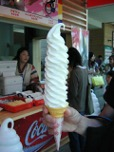
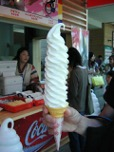

Kyle Raser
Meet Kyle Raser, a Pennsylvania native with a childhood rooted in the scenic Poconos town of Milford. His earliest job experience involved crafting the perfect ice cream cone at the local store, setting the stage for a talent that would stick with him.
Kyle's diverse hobbies include a love for travel, playing the piano, indulging in Broadway shows, and voracious reading. His musical taste leans towards Broadway Musicals and singer-songwriters like Sarah Bareilles. When it comes to movies, he enjoys all genres. Still, he has a soft spot for Disney animations, often catching Oscar-nominated films through his AMC A-List membership.
An avid traveler, Kyle has explored every Disney park globally and embarked on journeys to exotic destinations like Egypt and India, thanks to a career that facilitates such adventures. While he's ventured far and wide, New York City holds a special place in his heart, with frequent visits throughout the year.
On the culinary front, Kyle's palate appreciates nearly every type of cheese (except blue cheese), and his ultimate favorite is none other than a classic pizza.
The most profound influence in Kyle's life comes from his mother, a person of remarkable sweetness and strength who has triumphed over significant challenges. Their daily conversations underscore the enduring connection that shapes Kyle's values.
One of Kyle's proudest moments includes being among the first to receive a peer lifetime achievement award. Beyond the accolades, he finds solace and escape in playing the piano, considering it a creative outlet that relaxes him.
Yet, amid all these passions and achievements, what truly brings Kyle the most joy and fulfillment is spending time with friends, family, and their cherished dog, Edison. Life is a precious gift for Kyle, and he endeavors to make the most of every fleeting moment.
 
